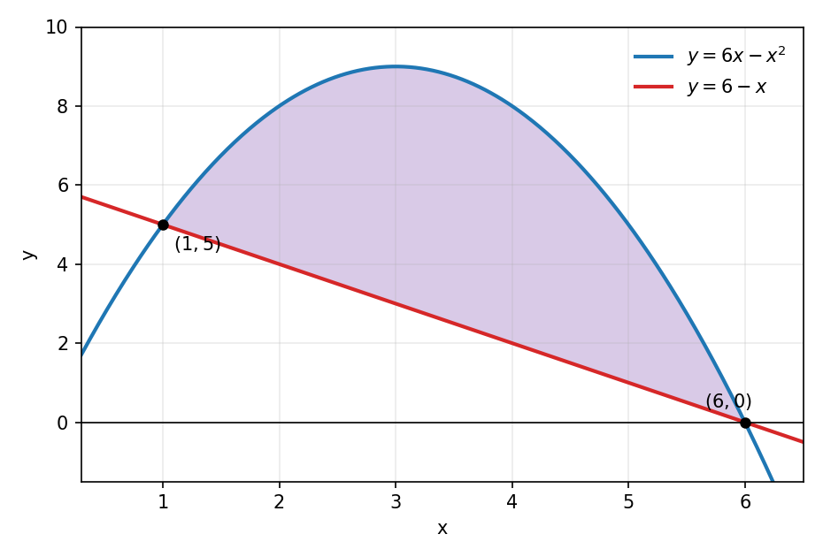
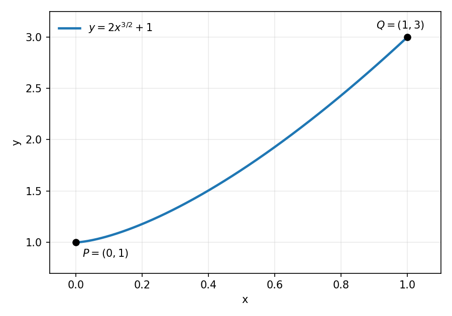
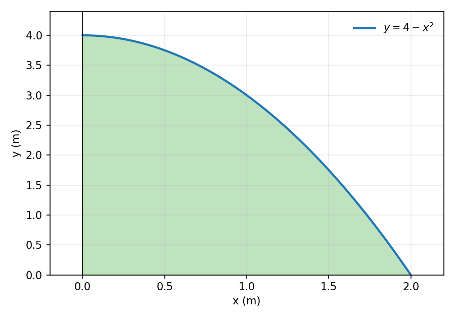

En esta clase resolvemos paso a paso la pauta de la Prueba 2:
Considere la región R comprendida entre la parábola y=6x-x^2 y la recta x+y=6.
Escribimos la recta como y=6-x e igualamos: 6x-x^2=6-x \implies x^2-7x+6=0 \implies (x-1)(x-6)=0. Los cortes son x=1 y x=6. Evaluando en las curvas, los puntos de intersección son (1,5) y (6,0).
En el intervalo (1,6) la parábola queda arriba. Por ejemplo, en x=3, 6(3)-3^2=9, \qquad 6-3=3.

La región está descrita con y en función de x, así que cortamos en franjas verticales. Como el giro es en torno al eje y, la franja es paralela al eje y usamos capas cilíndricas: V_y=2\pi\int_1^6 x\left[(6x-x^2)-(6-x)\right]dx.
Simplificamos el integrando: V_y=2\pi\int_1^6 x\left(-x^2+7x-6\right)dx=2\pi\int_1^6\left(-x^3+7x^2-6x\right)dx. Integramos: V_y=2\pi\left[-\frac{x^4}{4}+\frac{7x^3}{3}-3x^2\right]_1^6.
Evaluamos: en x=6 la primitiva vale 72 y en x=1 vale -\dfrac{11}{12}. Por lo tanto, V_y=2\pi\left(72+\frac{11}{12}\right)=2\pi\cdot\frac{875}{12}=\frac{875\pi}{6}. El volumen es \dfrac{875\pi}{6} unidades cúbicas.
Ahora la franja vertical es perpendicular al eje x, así que usamos arandelas con radio exterior R(x)=6x-x^2 y radio interior r(x)=6-x: V_x=\pi\int_1^6\left[(6x-x^2)^2-(6-x)^2\right]dx.
Desarrollamos cada cuadrado: (6x-x^2)^2=x^4-12x^3+36x^2, \qquad (6-x)^2=x^2-12x+36. Restando, (6x-x^2)^2-(6-x)^2=x^4-12x^3+35x^2+12x-36. Por lo tanto, V_x=\pi\int_1^6\left(x^4-12x^3+35x^2+12x-36\right)dx.
Integramos: V_x=\pi\left[\frac{x^5}{5}-3x^4+\frac{35x^3}{3}+6x^2-36x\right]_1^6. Evaluando, en x=6 la primitiva vale \dfrac{936}{5} y en x=1 vale -\dfrac{317}{15}: V_x=\pi\left(\frac{936}{5}+\frac{317}{15}\right)=\pi\cdot\frac{3125}{15}=\frac{625\pi}{3}. El volumen es \dfrac{625\pi}{3} unidades cúbicas.
Determine la longitud de la curva y=2x^{3/2}+1 desde el punto P=(0,1) hasta el punto Q=(1,3).

La fórmula de la longitud de arco es L=\int_a^b\sqrt{1+\left(\frac{dy}{dx}\right)^2}dx. Derivamos: \frac{dy}{dx}=2\cdot\frac{3}{2}x^{1/2}=3\sqrt{x}.
Entonces \left(\frac{dy}{dx}\right)^2=9x \implies 1+\left(\frac{dy}{dx}\right)^2=1+9x. Los puntos P y Q corresponden a x=0 y x=1, así que L=\int_0^1\sqrt{1+9x}\,dx.
Con u=1+9x tenemos du=9\,dx, y los límites cambian así: x=0 \implies u=1, \qquad x=1 \implies u=10. Por lo tanto, L=\frac{1}{9}\int_1^{10}u^{1/2}\,du.
Integramos: L=\frac{1}{9}\cdot\frac{2}{3}\left[u^{3/2}\right]_1^{10}=\frac{2}{27}\left(10^{3/2}-1\right). Como 10^{3/2}=10\sqrt{10}, L=\frac{2}{27}\left(10\sqrt{10}-1\right)\approx 2{,}27. La longitud de la curva es \dfrac{2}{27}\left(10\sqrt{10}-1\right) unidades.
Una placa delgada ocupa la región del primer cuadrante limitada por la parábola y=4-x^2 y los ejes coordenados. La densidad superficial es constante e igual a \rho=9 kg/m².

La curva corta al eje x cuando 4-x^2=0, es decir, x=2 (tomamos la raíz positiva). Por lo tanto x\in[0,2] y m=\rho\int_0^2(4-x^2)\,dx=9\left[4x-\frac{x^3}{3}\right]_0^2=9\left(8-\frac{8}{3}\right)=9\cdot\frac{16}{3}=48. La masa es 48 kg.
M_y=\rho\int_0^2 x(4-x^2)\,dx=9\left[2x^2-\frac{x^4}{4}\right]_0^2=9(8-4)=36. Por lo tanto, \bar{x}=\frac{M_y}{m}=\frac{36}{48}=\frac{3}{4}.
M_x=\frac{\rho}{2}\int_0^2(4-x^2)^2\,dx=\frac{9}{2}\int_0^2\left(16-8x^2+x^4\right)dx. Integramos: M_x=\frac{9}{2}\left[16x-\frac{8x^3}{3}+\frac{x^5}{5}\right]_0^2=\frac{9}{2}\left(32-\frac{64}{3}+\frac{32}{5}\right)=\frac{384}{5}.
\bar{y}=\frac{M_x}{m}=\frac{384/5}{48}=\frac{8}{5}. El soporte debe ubicarse en el centro de masa: (\bar{x},\bar{y})=\left(\frac{3}{4},\frac{8}{5}\right). Es decir, aproximadamente en (0{,}75,\,1{,}6) metros.